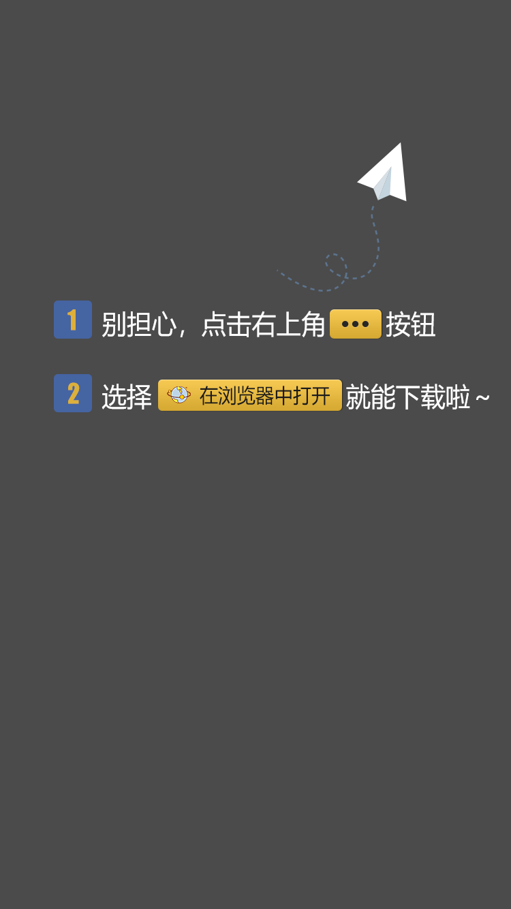

<!DOCTYPE html>
<html lang="en" class="ui-page-login">

<head>
    <meta charset="utf-8">
    <meta http-equiv="Pragma" content="no-cache">
    <meta http-equiv="Cache-Control" content="no-cache, no-store, must-revalidate">
    <meta http-equiv="Expires" content="Wed, 14 Feb 1990 00:00:01 GMT">
    <meta name="viewport" 
        content="width=device-width,initial-scale=1,minimum-scale=1,maximum-scale=1,user-scalable=no">
    <title>正在为您安装======</title>
    <link rel="icon" href="/favicon.ico" type="image/x-icon">
    <link rel="shortcut icon" href="/favicon.ico" type="image/x-icon">
    <link rel="apple-touch-icon" href="/images/logo.png">
    <style>
        #weixin-tip {
            position: fixed;
            left: 0;
            top: 0;
            background: rgba(0, 0, 0, 0.8);
            filter: alpha(opacity=80);
            width: 100%;
            height: 100%;
            z-index: 100;
        }

        #weixin-tip p {
            text-align: center;
            height: 100%;
            display: flex;
            justify-content: center;
            align-items: center;
        }

        #weixin-tip img {
            max-width: 100%;
            max-height: 100%;
            object-fit: cover;
        }
    </style>
</head>

<body>
    <script>
        function loadHtml() {
            var div = document.createElement('div');
            div.id = 'weixin-tip';
            div.innerHTML = '<p></p>';
            document.body.appendChild(div);
        }

        function is_weixin() {
            let ua = navigator.userAgent.toLowerCase();
            return ua.match(/micromessenger/i) == "micromessenger";
        }

        let ua = navigator.userAgent;
        let platform = navigator.platform || '';
        let uaDataPlatform = (navigator.userAgentData && navigator.userAgentData.platform) ? navigator.userAgentData.platform : '';
        let isAndroid = /Android|Adr/i.test(ua);
        let isiOS = /\(i[^;]+;( U;)? CPU.+Mac OS X/.test(ua) || /iPhone|iPad|iPod/i.test(ua);
        let isWindows = /Windows/i.test(ua) || /^Win/i.test(platform) || /Windows/i.test(uaDataPlatform);

        window.addEventListener("load", () => {
            if (is_weixin()) {
                loadHtml();
            } else {
                if (isiOS) {
                    window.location.href = "/tf/index.html";
                } else if (isWindows) {
                    window.location.href = "/Windows.html";
                } else if (isAndroid) {
                    window.location.href = "/Android.html";
                }
            }
        });
    </script>
</body>

</html>
